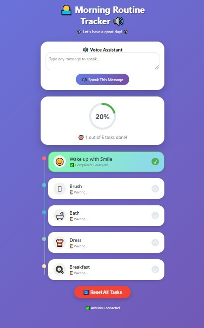

Design & Implementation of a
Morning Routine Tracker
for Children with ADHD
An IoT-based assistive device to support structured morning routines
Abstract
Attention-Deficit/Hyperactivity Disorder (ADHD) affects many children worldwide, often making everyday tasks like following a morning routine more challenging. Simple activities such as waking up, getting dressed, brushing teeth, and preparing for school often become overwhelming due to difficulties with attention, time management, and organization. These challenges often lead to stress for both children and their caregivers, especially during busy mornings.
The system is designed around the NodeMCU ESP8266, which acts as the central controller to manage inputs, outputs, and IoT communication. A regulated 5V power supply ensures stable operation of all connected components.
Five push buttons are used as input devices, each assigned to a specific morning routine task. When a child presses a button, the NodeMCU processes the input and activates the corresponding output. One of the LEDs (LED 1 to LED 5) lights up to provide a visual indication of task completion. At the same time, the I2C display shows instructions or messages to guide the child step-by-step through the routine.
Additionally, when a push button is pressed and a task is successfully completed, the system triggers a printer module to generate a reward output. This reward-based mechanism encourages positive behavior and motivation. A GPIO2-connected speaker provides audio feedback or reminders, reinforcing task completion and improving user interaction.
Problem Statement
Children with ADHD face significant barriers in completing structured morning routines — impacting themselves and those around them.
Attention & Focus
Children with ADHD often struggle to sustain focus on sequential tasks like a morning routine, frequently losing track of where they are or what comes next.
Time Management
Time blindness — makes mornings overwhelming and stressful. Children with ADHD often have little sense of how much time has passed.
Caregiver Stress
These daily challenges affect not only the child but also their parents and caregivers, who must intervene repeatedly during already busy mornings.
How the System Works
A dual-microcontroller design: the Arduino Uno handles physical buttons, LEDs and the thermal printer; the NodeMCU ESP8266 hosts the web dashboard, drives the PAM8403 speaker, and bridges both boards over SoftwareSerial.
to both boards
Thermal printer
Serial bridge
SAM TTS · Wi-Fi
mDNS host
GPIO3 (RX pin)
I2S No-DAC
morningtracker.local
Live progress
Arduino Uno (pins 2–5, A0 for buttons; 8–12 for LEDs; pin 6/7 SoftSerial to printer) communicates with NodeMCU (D7/D8 SoftSerial). NodeMCU hosts the Wi-Fi web server and drives the PAM8403 amplifier for voice feedback.
Arduino Uno — Pin Mapping
| Pin | Component | Task |
|---|---|---|
| D2 | Button 1 | Wake Up & Smile |
| D3 | Button 2 | Brush Teeth |
| D4 | Button 3 | Take Bath |
| D5 | Button 4 | Get Dressed |
| A0 | Button 5 | Have Breakfast |
| D8–D12 | LEDs 1–5 | Task completion indicators |
| D6 (TX) | Thermal Printer | SoftwareSerial TX |
| D7 (RX) | Thermal Printer | SoftwareSerial RX |
NodeMCU ESP8266 — Pin & Route Mapping
| Pin / Route | Component / Endpoint | Purpose |
|---|---|---|
| D7 (RX) | Arduino SoftSerial | Receive task status |
| D8 (TX) | Arduino SoftSerial | Send commands |
| GPIO3 (RX) | PAM8403 IN+ | I2S No-DAC audio out |
/ | Web Dashboard | Full progress UI |
/api/status | JSON API | Live task status |
/api/reset | POST endpoint | Reset all tasks |
/api/speak | POST endpoint | Trigger TTS via SAM |
| mDNS | morningtracker.local | Friendly hostname |
Hardware Components
A dual-board IoT setup with physical buttons, multi-sensory feedback, and a built-in web dashboard — all running in a classroom-friendly enclosure.
Main physical controller. Reads 5 push buttons, drives 5 LEDs, controls the thermal printer via SoftwareSerial, and sends task events to the ESP8266.
Wi-Fi IoT board. Hosts the built-in web dashboard, drives the PAM8403 speaker via ESP8266SAM TTS, bridges serial data to/from Arduino, and serves a JSON REST API.
Five INPUT_PULLUP buttons on Arduino pins D2, D3, D4, D5, A0 — one per task. Sequential logic blocks each button until the previous task is completed.
Visual indicators on Arduino pins D8–D12. Each LED blinks 3 times on task completion then stays solid. A celebration blink sequence fires when all 5 tasks are done.
Stereo class-D amplifier driven from ESP8266 GPIO3 (RX) using AudioOutputI2SNoDAC. Speaks per-task motivational messages via ESP8266SAM text-to-speech.
SoftwareSerial on Arduino pins D6/D7 at 9600 baud. Prints a "SUPERSTAR! Morning Routine Completed 100%" reward ticket with the child's name when all 5 tasks are done.
Served by the ESP8266 at morningtracker.local. Shows progress ring, timeline task list, voice assistant textarea, and Reset button. Auto-refreshes every 3 seconds.
Regulated 5V supply providing stable power to both microcontroller boards and all connected peripherals throughout a full morning session.
Web Dashboard in Action
The ESP8266 hosts a mobile-responsive web app at morningtracker.local. Parents and children can monitor progress in real time from any browser on the same Wi-Fi network.

Actual hardware dashboard — 1 of 5 tasks completed
/api/status.Key Features
Designed to engage, motivate, and empower — for children and their caregivers alike.
Real-time task tracking via the Blynk app, accessible to parents and guardians from anywhere with an internet connection.
Tracks daily task completion over a full seven-day period, then automatically resets to begin a fresh tracking cycle.
The printer module generates physical reward printouts when tasks are completed, reinforcing positive behavior through tangible recognition.
Combines visual (LEDs + display), audio (speaker), and tactile (push buttons) feedback for maximum engagement across sensory channels.